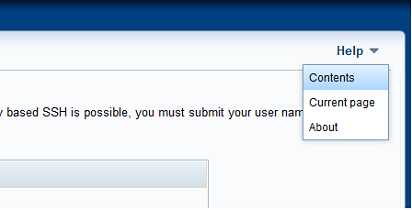
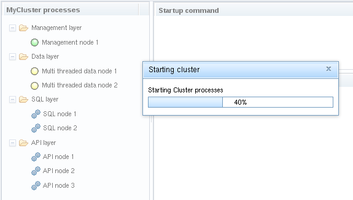

This is the user guide for the MySQL Cluster configuration tool. The aim of this
tool is to help you install, configure and deploy NDB Cluster quickly using GUI. It is
also a great learning tool. You can read the user guide sequentially, or you can
get help regarding the wizard page you are currently at by choosing the proper
entry in the Help menu. This user guide is divided into the following main parts:
Installing and Starting will describe what the system
requirements are for running the configuration tool. Also, how to install and
start it will be explained.
The Wizard Overview will provide a high level description
of the main parts of the wizard and how they interact. How to use the configuration
tool in terms of navigation, settings, etc. will also be covered.
In Wizard Pages, the individual pages of the wizard
will be examined. The various input widgets will be explained in detail.
Finally, the Troubleshooting section will present various topics
that deserve further attention in terms of potentially leading to problems.
Tool Name
The configuration tool is a part of the MySQL Cluster Software, and hence, it
does not have a particular name. In this user guide, we refer to it as the
(Auto)installer, configurator, configuration tool,
configuration wizard, MCC or simply wizard.
The configuration tool is installed together with the MySQL Cluster software.
Please refer to the
regarding installation. This section describes the requirements to the
environment of the tool, important information about security, and explains
how to start the wizard.
The configuration tool may end up in various locations depending on the
context (note that the default paths may be overridden at install time for
some package formats).
The tool works at least with MySQL NDB Cluster version 7.6 and up.
We support installing Cluster processes on RPM/YUM hosts from official
MySQL repository. Please make sure each host in the cluster that is not
running OL or similar, has proper installation of MySQL software. This is
the limitation of current version.
If you are installing on your own, please make sure MySQL Cluster community
binaries are installed on every management node as well as MySQL Server
community binaries on every sql node. Client binaries are used for starting,
stopping and querying status of various Cluster processes so client
packages are required too.
You can not mix your local box with remote hosts. If you still wish to use
your local box in multi-host setup, please enter proper external IP address
of your local box in HOST::Name and avoid using 127.0.0.1/localhost.
We are constantly updating configurable parameters but there is always a
chance the tool is missing some of them.
Some configuration parameters are intentionally hidden, such as MaxNoOfExecutionThreads,
NoOfFragmentLogParts, ThreadConfig etc., to allow for continuous starting
and stopping of Cluster. These are mostly parameters that depend on each
other. For example, if you change MaxNoOfExecutionThreads from 4 to 9 and
Cluster was already started with 4, NoOfFragmentLogParts should be adjusted
from 2 to 4 (#LDM threads). If you do so, your Cluster will not start.
Users who wish to install Cluster on Linux should be in SUDOers list
while starting Cluster and MCC on Windows requires Administrator privileges.
Although configuration files you create (~/.mcc/name.mcc) are transferable
between various browsers on same MCC host as well as between different
MCC hosts it is not easy to set up new Cluster using configuration file
created for different deployment. Should you try to attempt such task, I
advise you to create new configuration with all the new hosts, fetch HW
resources for them on Define Hosts
and save it. Then copy the last two JSON objects with nodes assignment
and settings you might have changed from old configuration to new one.
Mind the "host": N, lines, this is where you connect certain
process with host via "id": N,!
Example:
So, to put the Management process on new host 10.172.165.189
you should locate "name": "Management node 1", and put 6
into field "host" so it looks like
-o SERVER_LOG_FILE, --server-log-file=SERVER_LOG_FILE log requests to
this file. The value - means log to stderr: [default: ndb_setup-1541.log]
-H, --use-http use http for communication between back-end and front-end in browser.
If you are using certificate provided by us, Safari, for example, will not start
unless this option is included [default].
-S, --use-https use https to secure communication between back-end and front-end in browser
-c CERT_FILE, --cert-file=CERT_FILE file containing X509 certificate
which identifies the server (possibly self-signed): [default: cfg.pem]
-k KEY_FILE, --key-file=KEY_FILE file containing private key when if
not included in cert-file: [default: none]
-a CA_CERTS_FILE, --ca-certs-file=CA_CERTS_FILE file containing list
of client certificates allowed to connect to the server [default: none (no
client authentication)]
If no options are given, we default to HTTP (-H) using self-signed certificate provided
with the software. If you want to use HTTPS you have to add -S (or --use-https) to command
line.
First, you need to identify the directory where the ndb_setup tool
is located. This location depends on which package was downloaded and how
it was installed. Then, you can start in the following ways:
From the command line: Either change current directory to the one
identified above, or enter the command prefixed by its path.
Double clicking the appropriate icon: Open the file browser, go to
the appropriate directory, identify the ndb_setup executable, and
double click it.
Note: Web server is Python process started in shell. Please refer
to on-screen instructions on how to stop it properly. If you exit the shell
abruptly, you might need to manually remove [HOME]mcc.pid file before retrying.
Note: On Windows, locate setup.bat in root of your MySQL software
installation and run it.
Development is based on ES6 specifications. Browsers not supporting it fully,
like IE11, might not work properly.
The configuration tool makes it a top priority to support the following
browsers:
Firefox
Chrome
Microsoft Edge
Vivaldi
Additionally, the following browsers are supported as far as possible:
Opera
Microsoft Internet Explorer 11
Safari: Use -H parameter (http), allow pop-ups and add exception for MCC site
if you're using default certificate provided by us and/or old, expired certificate.
There have been no issues detected with Microsoft Edge browser. However, IE insists
on parsing DOJO requirements too early in the process which effectively disables
loading DIJIT templates from cache thus forcing load from different domain. As
cross-domain scripting is disabled in IE by default, should the problem occur, you will have
to change Internet options/Security/Custom level under Miscellaneous/Access datasources
across domains to ENABLE or PROMPT for MCC to work. Also, local sites can trigger
"compatibility mode" in IE thus rendering happens with some decade old engine.
In such case, uncheck Internet options/Advanced/Go to an intranet site for...
IE11 doesn't support ES6 fully and receives no development from Microsoft so we
may stop supporting it very soon.
The following software must be installed on the host where the configuration
tool is started:
Python: Interpreter and libraries for the configuration tool.
Version 2.7 is required (2.6 might work but we did not test it), and can be downloaded from
http://python.org/download/
Paramiko: SSH implementation required to communicate with remote hosts.
Version 2 or higher is required, and can be downloaded from
http://www.lag.net/paramiko/
Cryptography: Cryptography module required by Paramiko. Version 1.9 or
higher is required, and can be installed with $ pip install cryptography==1.9.
For development, we use Python 2.7.14, Paramiko 2.1.2 and cryptography 1.9.
If you install the Windows version of the configuration tool, the above
software comes bundled and is installed automatically.
The following software must be installed on the remote hosts that will be
used to deploy the MySQL Cluster:
User authentication: This is no particular software, of course, but
the user wanting to access the remote host must be able to authenticate
through SSH by means of user credentials or keys.
Three basic security mechanisms may be utilized by the configuration tool:
SSH: Secure shell is used to enable the back end to perform actions
on remote hosts. Thus, the remote host being accessed must have an SSH server
up and running. Additionally, the configuration tool user must have SSH access
to the remote server by means of a user name and password, or by keys.
https: If the communication between front end (JS running in your browser)
and back end (Python web server) is not encrypted, the SSH password, for
example, is transmitted in a format that is readable to anyone.
For communication to be encrypted, the back end must have a certificate,
and the front end must communicate with the back end using https rather
than http. The easiest way to enable this is to issue a self signed certificate.
After the certificate is issued, it must be made available to, and used by,
the back end. This can be done by starting the wizard with the options
--use-https and --cert-file=<certificate file name>.
We provide sample certificate in root directory (cfg.pem) so using just
-S should suffice to get you going.
Authentication: The back end process can execute commands on its
local host as well as remote hosts. Thus, anyone connecting to the back end
can take charge of how commands are executed. To reject unwanted connections
to the back end, certificates may be used for authentication of the client.
Thus, a certificate must be issued by the user, installed in the browser,
and made available to the back end for authentication purposes. This can be
done by starting the back end with the option
--ca-certs-file=<certificate list file name>.
Configuration file: Configuration is saved to a file with extension .mcc
in current users HOME/.mcc directory. File is plain text holding external and
internal IP addresses of hosts, their HW resources as well as user/key name(s)
for authentication but no passwords.
Two main components comprise the cluster configuration tool:
The front end is a client implemented in JavaScript, running on your
desktop in your favorite web browser.
The back end is a server implemented in Python, running on your desktop
or on another host. However, it is best, security-wise, to run both front and back
end on your desktop.
The two main components communicate using messages wrapped in http(s). The back
end can manage MySQL cluster software on any host. If the software is on the
same host as the back end itself, the Python interfaces are used for file
system operations, process manipulation, etc. If the MySQL Cluster software
is on remote host, the back end relies on SSH access to that hosts, using the
Paramiko package for executing commands remotely.
The remainder of this section will describe overall usage of the wizard in
terms of navigating between pages, various settings, and how to get help.
The configuration tool is implemented as a wizard with a number of pages
covering different steps. There are two ways to navigate between pages.
First, the navigation toolbar or breadcrumb trail displays the
titles of the various pages. A specific page can be selected by clicking the
page title:
In the breadcrumb trail, the title of the current page is highlighted. The
advantage of the breadcrumb trail is that you can jump more than one page
in either direction. The main feature is that navigation doesn't persist your
configuration changes to external file making it preferred way when testing
temporary changes and/or just jumping to Deploy Configuration
page of already prepared configuration. You can also use this jump to attach
to already running Cluster.
Say you wanted to persist your changes, it won't happen. Maybe you made changes to number and/or
arrangement or processes on Parameters page possibly invalidating configuration which was already
deployed or started and skipping directly to Deploy page will not adjust parameter values thus
resulting in failed deploy/start. And so on.
Do not skip pages if you are not sure what you're doing.
The second navigation mechanism is to use the three navigation buttons at the
bottom of the page. These can be used to advance to the next or previous
page, or to go to the very last page. The buttons are disabled as needed,
e.g., if you are at the last page, the Save&Next
and Finish buttons are disabled, while if you
are on the first page, the Previous button is
disabled. If you are making changes to configuration you wish to persist over
MCC sessions, you need to use Save&Next.
At the very top right in the wizard window you will find the Help menu:

The various menu entries in the Help menu are:
Content: This will show the user guide (i.e., the document you are
currently reading) in a separate window, so you can read it while using the
wizard.
Current page: This will open the user guide at the section describing
the page currently displayed in the wizard.
About: This will show a small dialog displaying the tool name and
version number.
In addition to the help menu, there are tool tips for most of the input widgets.
They are displayed when you hover over the widget, or there is a small
question mark next to the widget's label which can be hovered for help.
For the configuration parameters, the parameter names are linked to the
MySQL Cluster documentation, so if you click the parameter name, the
appropriate documentation is displayed in a separate frame.
Back end is web server in Python. It is started with (s)bin/ndb_setup.py
(or with setup.bat on Windows). Ultimately, ndb_setup.py reaches share/mcc/request_handler.py
and MCC is started. request_handler is central script processing all the HTTP requests
from front end (mcc/server/api.js).
First, it determines the type of request (resources info, management node status etc.),
then it creates proper object by calling clusterhost::produce_ABClusterHost().
produce_ABClusterHost() determines whether the host towards which command is directed
is local or remote and returns LocalClusterHost() or remote_clusterhost.RemoteClusterHost().
The only difference is that LocalClusterHost has no credentials attached to object.
This newly created object is used to authenticate (RemoteClusterHost), run command
and return result at which time it is destroyed. The entry point for request is
def handle_req(req) and exit point is def make_rep(req, body=None). Synchronization
is done via def make_rep where sequence number coming from front end is passed back
in rSeq member:
Some requests, like def handle_copyKeyReq(req, body) are self-sufficient and return but OK,
some do the heavy lifting by employing appropriate routines in local/remote clusterhost
objects like def handle_readCfgFileReq(req, body).The most elaborate one is management
command handler, def handle_runMgmdCommandReq(req, body). This routine creates
permanent SSH connections to remote host(s) running ndb_mgmd process in setupMGMTConnection.
Through this connection object, commands are sent to ndb_mgm client library to get
status of all Cluster nodes which is then parsed and returned to front end properly
formatted. runMgmdCommandReq can also process special input from front end, like
"STOP" command which instructs it to clean up list of MGMTConnection objects.
This happens, for example, when Cluster is stopped and you navigate away from
Deploy Configuration page in front end
and also when you terminate Python web server. If host running ndb_mgmd process
is local, another mechanism is used, a socket connection
socket.create_connection(localhost, port). There are several points to take into
account here:
Different mechanisms employed for same task of gathering Cluster info for local
and remote hosts running ndb_mgmd process. Socket connection used for localhost is
the preferred way but it would require that firewall port (usually 1186) is open
on remote host(s) for outside connection. This is security risk so we opted for
installing Cluster client library on every remote host and using ndb_mgm to
collect status via SSH channel.
Permanent connections to remote host(s) in MGMTConnection list can become
stale/invalid. For example, connection may become invalid in following scenario:
You started configuration A connecting to ndb_mgmd process on host N. Then you close
front end while leaving back end running. You then start front end by typing the
URL in browser and load configuration B which has ndb_mgmd process running on host M.
This makes permanent management connection to host N in back end invalid. We did
our best to detect those situations and provide info requested.
For remote host(s) running ndb_mgmd process, default is to collect info via
SSH channel command "ndb_mgm -e"SHOW" to client library ndb_mgm. Should the
connection fail, we will try socket connection as if it's localhost. Should all
the attempts fail, front end will stop polling for Cluster status.
Next to note is def start_proc(proc, body). This function is used to start, stop
and, if necessary, kill Cluster processes on hosts. Each command object employing
this function has procCtrl (process control) object attached. Most important members
defined in "params" section are:
autoComplete: Should the 'bin', 'sbin', 'scripts'... directories get appended to
path provided with command. This is important, for example, for defining path for
Cluster binaries in front end (Hosts pageMySQL Cluster install directory). If
you're running Cluster deployment on RPM/YUM platform, ndb_mgmd will be in /usr/sbin,
while ndb_mgm will be in /usr/bin directory (same applies to mysqld and mysqladmin).
So START/STOP command will utilize autoComplete and HOSTS::MySQL Cluster install
directory should be set to just /usr/. There is no autoComplete for Windows host(s)
meaning Hosts page, MySQL Cluster install directory should point all the way down
to BIN (...\mysql-cluster-7.6-winx64\bin)
isCommand: This is a special flag used for, for example, service removal command
on Windows which might need retrying.
exec_cmdv: We call this command to get actual work done. The behavior is governed
with two more flags: waitForCompletion and daemonWait. If there is waitForCompletion
but no daemonWait, we wait for command to return indefinitely. If there is waitForCompletion
and daemonWait then we wait for daemonWait seconds before starting to poll for
result of command every 0.5 seconds for another 2 minutes (localhost) or 3 minutes
(for remote host). If it doesn't complete, (Remote)ExecException is risen. This is
useful when issuing command we know will take some amount of time before completing
(like starting data node processes) but we still want to be able to recover from
failure (i.e. not wait indefinitely).
noRaise: Special flag telling exec_cmdv not to fail for specific return value
(other than 0).
Next we check that procCtrl doesn't have kill member and treat such commands as
"ordinary". Otherwise we proceed to special handling of commands with kill members
where we first determine if recipient OS is Windows (procCtrl.servicename is not empty)
or *nix since Windows require different handling due to fact that we install
Cluster processes as services there. In general, when stopping Cluster, we first
stop mysqld(s) by issuing mysqladmin --shutdown/net stop N5x with kill member and
getPID member describing how to obtain PID for the concrete process (see deploy.js,
getStopProcessCommands for details). If, for some reason, mysqladmin/net stop fails
to stop mysqld(s) then we will obtain the PID(s) one by one and kill those mysqld
processes. Things are bit trickier for Cluster processes. First we try to connect
to primary management host and issue ndb_mgm -e"SHUTDOWN" there. If this fails,
we try to kill the offending ndb_mgmd process. Then, if Cluster has second management
node, we repeat the above on that host. Ultimately, if all management nodes (hosts
running ndb_mgmd process) fail to take Cluster down, we will issue kill to all data
node processes. This means killing both angel and data node process so "DNODE" is
sent as special command and not "KILL". Data node processes also have additional
member, procCtrl.getPIDchild, in addition to procCtrl.getPID (Angel/actual process).
Starting Cluster is bit simpler. First we start primary management process (ndb_mgmd)
and then secondary (if present). After that we start all data node processes (ndbmtd)
in parallel, and then all of mysqld processes also in parallel (except for IE11 where
processes are started sequentially).
The approach of one ClusterHost object per command helps with resources and
synchronization but it's slow. So we introduced permanent SSH connections to all
of remote hosts in ConnArr list of paramiko.SSHClient() objects which are extended
with several new members explaining host OS, CPU etc. Thus first command going to
remote host is going to be much slower than subsequent ones. If you are creating
new Cluster, this will probably be getting resource info. If you are working with
already defined Cluster, probably Start Cluster command. This list of SSH connections
is maintained and checked for stale connections upon each new command. It is released
once you stop Python process in console to exit MCC.
Finally, on Windows, we have noticed Python web server going to "sleep" on occasion.
This manifests as if nothing is happening in front end. So if you notice, for example,
progress bar not advancing at all for longer period of time, click on Python console
and press ENTER key once or twice to get things going again. You should see logging
resuming. Also, Windows Server OS tends to ignore Ctrl+C in Python shell. If so,
use Ctrl+Break to exit properly.
Cleaning up lists of SSHClient() objects upon exit:
^C received, shutting down web server
17:01:13,091: WARNING [cleanupMGMTConnections;request_handler.py:98]: Cleaning up MGMT connections array.
17:01:13,091: WARNING [cleanupConnections;remote_clusterhost.py:61]: Cleaning up connections array.
Removing C:\Users\user_name\mcc.pid
Terminate batch job (Y/N)? y
Cluster is started if management process is running and and responds to
client poll for status. For example, mysqld process may start (green light on
DEPLOY page) and then die (red light on DEPLOY page) but we still consider Cluster
started. To investigate what happened with specific command to start failing SQL node,
you can check JavaScript console, click View commands
or click Cluster tools and choose Get log files.
Cluster is stopped if all mysqld processes can not be polled for status and
ndb_mgm client reports management process begun Cluster shutdown procedure. If this
fails, we kill the processes. Assuming standard shutdown procedure is in effect
(ndb_mgm -e'SHUTDOWN') the processes tree on DEPLOY page will show some processes
as running even after we alert you Cluster has stopped. Just wait 5-10 seconds for
all statuses to refresh.
The first page displayed after the ndb_setup command is invoked is
the Welcome page. Here, you have three major areas:
Radio box with configuration(s): Upon startup, backend lists all non empty
.mcc files from current user's HOME/.mcc directory and sends the list to front end in URL. Front end
then appends NEW CONFIGURATION (default item) to the list. This is the first choice to make. If
you choose "NEW CONFIGURATION", you will be prompted to enter the name for new
configuration after running it. You can omit .mcc part.
RUN configuration When configuration is picked, clicking this button
will load your configuration into MCC and advance to the next page in wizard.
When you click RUN configuration, the back end server
will get contacted to read from chosen configuration and pass it back.
This information will then get attached to window.name environment
variable and passed to next page where it will be loaded into in-memory stores.
Providing existing configuration name when prompted for "New configuration" name is
not treated as error. Instead, MCC will simply read the existing configuration and proceed.
Configurations are files with .mcc extension residing in current user's HOME/.mcc directory.
The name of the file is copied to "Cluster name" member of ClusterStore. File consists
of saved contents of 5 in-memory stores:
ClusterStore: Single entry, encompassed in {}
HostStore: Array of as many entries as there are hosts in Cluster, encompassed in {}
EmptyStore: Just {}, placeholder for processTypeStore
processStore: Array of as many entries as there are processes in Cluster, encompassed in {}
processTreeStore: Array of as many entries as there are families of processes in Cluster, encompassed in {}
This array has just one member ("id": 0,) meaning there can be only
one Cluster configuration per file. The rest represents various choices available
on Define Cluster page.
This array has as many members as there are hosts in Cluster. Key
to linking this store with processStore is "id" field which is always
different for every host (HostStore.id=processStore.host). It does not need a link
to ClusterStore since there can be just one Cluster configuration per file.
The lowest ID is always reserved for dummy entry "Any host" which serves to
initialize empty store. It is the only entry with "anyHost": true!
The rest represent various choices available on
Define Hosts page.
This array has as many members as there are processes running on
Cluster hosts. Key to linking this store with host store is "host" field
(ID in HostStore).
If you change some parameter on process level, it will be recorded here. For example,
you can see that mysqld process id=15, running on host=8 has Port=3308 which is
not the default setting thus recorded here.
The rest represent various choices available on Define Processes and
Define Parameters pages.
This array has as many members as there are process families running
on Cluster. Families are hardcoded into MCC thus this field will always be of same
size. So, if you change some parameter on family level (i.e. value is the same for
all processes of the same family), it will be recorded here. For example, you can
see that data family has NoOfReplicas=2, FragmentLogFileSize=64 and
NoOfFragmentLogFiles=16 which applies to all processes belonging to data
family (processStore.processtype 1 and 2). The link is processTreeStore.ID=ProcessStore.processtype (
0 - management family, 1 and 2 - data family (ndbd/ndbmtd), 3 - sql family and 4
- API family).
The rest represent various choices available on
Define Parameters page.
We do not encourage editing configuration files, however, sometimes it might be
the fastest way to transfer settings from one Cluster to the other.
On Define cluster page you can decide on overall settings for the
cluster you are going to configure. Setting provided here are "Cluster-wide"
meaning for every host added, if there are no per-host entries, these will
be used. This allows for quick deployment of configurations where there is
just localhost or where, for example, credentials are the same for every host
in Cluster (cloud deployment). There are also receipts for various Cluster settings
depending on what you want (see below). Please note that you can override any
of the settings here later in the process.
Edits on this page are disable while Cluster configured is running.
The page contains following fields:
Cluster properties: various Cluster level properties
Cluster name: This field reflects loaded cluster configuration
name and so it can't be changed.
Host list: Here, a comma separated list of host names can be added.
If you list only 127.0.0.1 or localhost it means the host where
the ndb_setup command was issued. Host names can be
added to or deleted from this list. If a host name is deleted, the processes
configured to run on that host will also be deleted. This is convenient way
to add host(s) especially if they all use same credentials. If you want more
control over your hosts definition, or you have hosts in Cluster with different
credentials, you can leave this box completely empty.
Application area: This describes the overall way the cluster will be
used. You can choose between the following three receipts:
Simple testing: Here, the cluster will require little hardware
resources, but this will also make the cluster performance suffer greatly.
This application area is fit for quick testing for example.
Web application: For a web application, the configuration parameters
will be defined in a way that maximizes performance, given the host hardware
resources.
Realtime: The realtime configuration is much the same as the web
application. The difference is that the realtime configuration is more
sensitive to timeouts in the heartbeat mechanism to detect failing
processes faster.
Write load: You get to choose among the following receipts:
Low: This is assumed to be less than 100 write transactions per
second for the entire cluster.
Medium: This is assumed to be between 100 and 1000 write transactions
per second for the entire cluster.
High: This is assumed to be more than than 1000 write transactions
per second for the entire cluster.
Master node: Drop down list presenting external IP address of "Master node"
or text "UNASSIGNED". This value is changed when running "Copy SSH keys" on
Deploy Configuration page so please refer
to the explanation there. Field is read-only for now.
SSH Property: Here you can specify the use of SSH credentials to
access remote host(s). If your host list (see above) only contains 127.0.0.1,
no SSH credentials are required.
RESET credentials for this cluster This button clears
the Cluster level credentials from memory storage and various variables. If you need to
change the way you're connecting to your Cluster, please use this button to reset all first.
The button has no effect on Host-level credentials you might have entered.
Key based SSH: Check this box if you have enabled key based login
on the remote host. This will disable the two fields below. If the private
key is not encrypted id_rsa and resides in ~/.ssh it will be used. For all
other cases, please fill in Key user (if different than logged in one), Key
passphrase (if key is encrypted) and Key file (if not ~/.ssh/id_rsa).
User name: Submit your remote SSH user name here.
Password: Submit your remote SSH password here.
The credentials entered here are the same for every host, unless overridden
with Edit Host, meaning they are kept on Cluster level. If you have per host
credentials, please use Add Host on
Define Hosts page.
Install properties: Here you define Cluster installation parameters as well
as firewall manipulation.
Install MySQL Cluster: Option for installing Cluster on hosts
NONE: No installation of Cluster will take place.
BOTH: Both DOCKER and installation from REPO will be considered
depending on OS and available images. Should both installation mechanisms
be available on certain host, we will prefer REPO over DOCKER.
REPO: For every host in Cluster, the attempt will be made to install
Cluster SW from the repository URL (default).
DOCKER: For every host in Cluster, the attempt will be made to install
Cluster SW DOCKER image.
Open FW ports: Check if you need the tool to try to open necessary ports
for Cluster processes on every hosts.
Use internal IP address (VPN): This governs forming of connection
string between Cluster nodes. If checked, Internal IP will be used for nodes
communication. If unchecked, External IP address will be used.
If only some of your hosts have Internal IP address, it is better to use External
IP. If all of your hosts are inside VPN, make sure you enter InternalIP's and
use them.
Changes monitor: Four buttons at lower-left showing if there were modifications to configuration.
C: Changes on Cluster level. If significant change appears, button turns red.
H: Changes on Host level. If significant change appears, button turns red.
P: Changes on Process level. If significant change appears, button turns red.
G: General log of changes.
Synchronization: All logs but General are synced with configuration when cluster
is deployed or started.
To view what changed, just click the button:
Password reminder:
If passwords were present at Cluster level in previous run, look for red labels
and put your passwords into their respective input field(s).
OCI deployment tips: When creating deployment on Oracle cloud infrastructure,
you should check "Key based SSH" and enter "opc" into "Key user". Provide
"Key passphrase" if your key is encrypted. If your key file is different than
~/.mcc/id_rsa.pub, you should put it, with fully qualified path, to "Key file".
Also make sure "Install MySQL Cluster" is set to "REPO"(/"BOTH") and check
"Open ports in firewall". To take full advantage of MCC capabilities, please use
instances with RPM/YUM OS such as Oracle Linux. For RPM/YUM platforms and default
install, "MySQL Cluster install directory" should be set to "/usr/".
If you enter any credentials here you won't be able to change them for particular host
on Hosts page, i.e. credentials entered here are used for all hosts.
If you're installing on RPMYUM platform, be sure to pick right Cluster Version and
REPO installation.
The Save&Next button sends asynchronous request for your changes to be saved to
configuration file and advances to next page. If you close the wizard here,
or use breadcrumb navigation, no changes you made will be saved unless special
event, like successful start of Cluster, occurs. However, even if not saved,
changes will persist throughout current browser session.
After the overall cluster properties have been defined, you can refine the
host details as well as define new hosts here.
Edits on this page are disable while Cluster configured is running.
The wizard page is shown below:
Password reminder:
If passwords were present for some hosts during previous run, you will be notified
to reenter them on this page. In concrete example, you need to select host "192.168.56.102"
and click Edit selected host. On that screen you need to
reenter ordinary password (no SSH authentication selected for this host). After saving changes,
select host "192.168.56.101", click Edit selected host and on
new screen enter passphrase for public key used (SSH authentication is checked for this host)
Here, hosts can be added by clicking the Add hosts button and entering
host name (host external ip address) as well as credentials. Field Key_file
should point to private key file to be used with selected host
(i.e. C:\Users\user\.ssh\key_file_name). If the key has default name (id_rsa),
it will be automatically picked up by Paramiko.
Host name (Host external ip address): IP address making host accessible from the box MCC is
running on.
Host internal ip address: Host IP address inside VPN or external IP
address if no VPN is used. Imagine you have five hosts Cluster running in
Oracle Cloud then, in this field, you would enter the IP address used inside
cloud service for safer and faster communication between hosts. If your instances
are RPM/YUM OS, such as Oracle Linux, this information will be provided for you.
We also try and guess InternalIP on other platforms but do not fill it in unless
absolutely certain. Our best guess on InternalIP will be logged in JavaScript
console for you to check:
[INF]Array of IP's is:
(index) Values
0 192.168.56.1
1 192.168.0.105
If you fetched hosts resources, the platform name, RAM size and number of CPU
cores will be filled in automatically and displayed in the grid. Otherwise,
an ellipsis in the grid will indicate that the information was not obtained.
The status of the resource information fetching is displayed in the
Resource info column. Please note that fetching the information may
take some time. Should the resource fetch fail, correct the host information
by clicking Edit selected host and refetch by
clicking Refresh selected host(s).
If the SSH user credentials on Define Cluster page are changed,
the tool will try to re-fetch the hardware information for hosts where a
piece of information is missing. When the information is re-fetched, the
various fields will be updated. If a field has been edited by the user, the
information will not be overwritten by the re-fetched value.
The hardware resource information, platform name, install directory, data
directory and free disk space can be edited by the user by clicking the
appropriate cell in the grid. It is also possible to select a host and press
the button Edit selected host. Then, a dialog will appear where various
fields can be edited. The edited values will be applied to selected host:
Please note that REPO/DOCKER install details are available for editing only on
this screen.
Turning your attention to two more things: I do not have "User" supplied. This
is indicative of my key being id_rsa and placed in ~/.ssh. If I supply
"Passphrase", this would mean my id_rsa is encrypted.
Also, I am deploying Cluster in VPN so I have proper IP address, not accessible
from the outside, in "Host internal IP" box. This will allow Cluster to skip
resolving names.
Details on hosts naming
One should always keep in mind the goal, i.e. deployment of the Cluster processes
over any number of hosts. Thus we refer to Hosts via their external IP address
and not FQDN, for example, even though it is possible. I.e., for anything other
than simple deployment just on localhost, you should follow these rules:
HOST::Name:
External IP address of the host making it possible for MCC to reach it via SSH tunnel.
HOST::InternalIP:
When processes run inside cloud/VPN, put internal IP address from the environment here.
This way you will allow processes on hosts to communicate in fastest way possible. If
the host is running RPM/YUM OS on OCI, this field will be automatically filled when fetching
host resource info. For other OS's, list of internal ip's fetched will be
logged in web console.
If the wizard was able to fetch just one IP address recognized as Internal,
it will save it to this field.
General usage of Internal vs. External IP addresses for communication
between Cluster processes is governed by Use internal IP address (VPN)
checkbox on Define Cluster page.
This field will be disabled for configuration with just localhost/127.0.0.1.
Initial values:
HOST::Name is propagated to both HOST::FQDN and HOST::InternalIP members.
The nodes are governed by config.ini file, distributed to each management node, containing hosts
designation on per process basis as well as connection strings. It might look like this:
In this particular case, HostName=10.172.162.24 is actually localhost. The reason
to define it as 10.172.162.24 and not "localhost" lies in that when config.ini is
distributed to second host, 127.0.0.1 will point to that host (10.172.165.190) and
the Cluster will not start. This is why you cannot mix 127.0.0.1/localhost with
remote hosts.
We strongly advise using Internal IP field when adding/editing hosts if Cluster
is running inside VPN (say Cloud deployment).
Let's recapitulate various scenarios:
Small localhost deployment:
Enter 127.0.0.1 or localhost in HostList on Define Cluster page.
Small deployment, home or office network:
Enter proper IP address of your localhost into HostList on Define Cluster page, add
other hosts using Add Host button on next page. Ignore InternalIP member.
Deployment to Cloud/other VPN environment:
Check Use internal IP address (VPN) on Define Cluster page.
When adding hosts on Define Hosts page, fill in Internal IP member. Name hosts by
their external IP address.
MCC will always use Host (Host external IP) member to connect, distribute
configuration and start processes. Configuration files and Cluster processes
will always use what is configured. If it's InternalIP, communication between
nodes will be as fast as possible and bypassing any errors on DNS level.
The hosts currently entered are displayed in the grid with various pieces of
information. A host, or a selection of hosts, can be removed from the
configuration by pressing Remove selected host(s).
If processes have been configured to run on these hosts, the processes will
be removed from the configuration too.
Finally, HostGrid can have two states, collapsed (default):
and expanded:
toggled by Show/Hide extended info button. Images show actual settings for OCI
deployment.
If you are using per-host credentials and not Cluster level ones, after editing
hosts, you should SHIFT-Click to select them all and press
Refresh selected host(s) to check connections work
and fill in various data for hosts.
Forgetting to refresh hosts info can lead to unpredictable results. For example, maybe
disk space is running low or you entered bad credentials and so on.
If you changed DataDir(s) or Platform be sure to visit
Define Parameters page and make sure
all is fine with groups of processes and processes.
If you removed host be sure to visit both Define Processes
and Define Parameters page and make sure
all is fine with groups of processes and processes. Same goes for adding the host to configuration.
The Save&Next button sends asynchronous request for your changes to be saved to
configuration file and advances to next page. If you close the wizard here,
or use breadcrumb navigation, no changes you made will be saved unless special
event, like successful start of Cluster, occurs. However, even if not saved,
changes will persist throughout current browser session.
After the hosts have been defined, the next step is to define which processes
should be part of the cluster and the way they will be distributed.
Edits on this page are disable while Cluster configured is running.
The page is shown below:
There are two main areas here, there is a process tree to the left,
with the various hosts and the processes configured to run on them. To the
right is an information pane which displays information about the currently
selected item in the tree. When the user enters this page the first time for
a cluster configuration, a set of processes is defined by default. The
processes defined depend on the number of hosts. If the user goes back to
the previous page, removes all hosts, and adds new ones, then a new set
of processes will be defined.
The processes are of the following main types:
Management node: Node for administrative tasks such as stopping
individual data nodes, querying status, running backup, etc. There can not be more than two management processes (ndb_mgmd) per Cluster although one is enough. The node ID's should be 49 (primary) and 50.
Single threaded data node: Node for storing the actual data and
executing queries. ID range is 1 to 48.
Multi threaded data node: Same as above, but with several working
threads executing in parallel. ID range is 1 to 48.
SQL node: MySQL server for executing SQL queries against the database.
API node: Node accessing the database through a proprietary API rather than SQL.
In the process tree to the left, each node has a numeric suffix, which is
incremented for each new process of that type. This is just to be able to
tell the different processes apart. In the tree, in addition to the hosts
you enter, there is a special entry Any host. This special "host" is
really just a placeholder where processes that should be allowed to run on
an arbitrary host may be located. Usually, a process is configured to run
on a specific host, and thus will not be allowed to run on an arbitrary host.
If this is desirable, the process should be added to the Any host
entry. Please note that only API processes may be located under special
entry Any host.
In the process tree, you can right click a host for a pop up menu displaying
an entry Add process. Selecting this entry will take you to the
Add new process dialog. Alternatively, you can select a host, and press
the Add process button below the process tree. The
add process dialog lets you select among the available process types,
and you can also enter an arbitrary process name instead of the default
suggestion:
In the tree, you can also right click a process and select delete process
from the pop up menu, or select a process and press the Del process
button below the process tree. If a process is selected in the process tree,
information about that process is displayed in the information pane to the
right. You may edit the process name, and you may change the process type to
another compatible type. Currently, the only compatible process types are
the two variants of the data node; single threaded or multi threaded. If you
want to change to an entirely different type, you need to delete the process
first, and then add a new process with the desired type.
Say you have old configuration which you already started one or more times with even number of
DATA processes. Then you decide to add/remove some processes. Say you remove 1 SQL process
and add 1 DATA process. If you skip Define Parameters page
and go directly to Deployment page not all variables will be properly set. For example, NoOfReplicas
for even number of DATA processes (started configuration) is 2 but for odd (new configuration) is 1.
Visiting Define Parameters page and checking on
processes and families will warn you about this:
We also removed one SQL process and skipping directly to Deploy page can result in hanging start of
SQL processes.
In short, if you made any changes here, make sure everything is fine on
Define Parameters page and consider redeploying
Cluster, even, maybe, deleting old data from DataDirs.
The Save&Next button sends asynchronous request for your changes to be saved to
configuration file and advances to next page. If you close the wizard here,
or use breadcrumb navigation, no changes you made will be saved unless special
event, like successful start of Cluster, occurs. However, even if not saved,
changes will persist throughout current browser session.
The page for defining parameters looks somewhat similar to the previous page
(Define Processes).
Edits on this page are disable while Cluster configured is running.
To the left is a tree with the processes, to the right is a pane with information regarding
the currently selected tree item:
However, looking at this in more detail, we see that the process tree is
organized differently. On the previous page, it reflected which hosts the
processes were running on, whereas on this page, it shows the processes
grouped by process type. Thus, the root nodes in the tree are the process
types (families), and the children are the process instances. You may notice
that the compatible processes are grouped into the same process type, hence,
the two data node processes will both be in the Data layer process type.
Below the process tree, you will see a check box labeled
Show advanced configuration parameters. This check box will make advanced
parameters visible or hidden in the information pane to the right. If you,
select the Data layer process group, you will see that toggling
the check box makes a lot of parameters appear or disappear in the pane to
the right. The significance of this visibility is only that the parameters
need to be visible for you to be able to change them. The parameters will be
set anyway (if nothing then to default values) and used in the configuration
of the cluster.
The purpose of this page is to define the various configuration parameters
for the processes. This can be done in two main ways:
If a process instance is selected in the tree to the left, a list of
available configuration parameters is displayed in the information pane to
the right. If a parameter is changed, then it will apply only to the selected process.
If a process group is selected in the tree to the left, you will also
see a list of available configuration parameters in the pane to the right.
However, if you change a parameter in this pane, the changed value will
apply to all process instances in that process group unless the instance
also has an overridden value for the parameter that was changed. Thus,
parameter changes done for a process instance will overrule changes done for
the process group. Best way to look at this is that "process group" parameters
go into DEFAULT section(s) while "instance parameters" go to section of config.ini
reserved for that instance. For example, you can have "Portbase" set to 3308
in SQL layer but still override that for first SQL node "Port" to be 3366.
When a process group or process instance is selected, you will see the
following information in the pane to the right (for SQL process):
In the information pane shown above, you see the various parameter names, their
values, and for some of them, there is also a green button with a plus sign
to the right. That button means that the parameter can be overridden. Thus,
if you push the button, the input widget for the parameter will be enabled,
and you will be able to change its value. The various parameters will have
predefined values. If you look at the parameter DataDir, for example, you
will see it is a predefined path. This path is constructed based on the host
on which the process will run, taking the data directory you entered for
this host on the Define Hosts page, and appending the node id. All
configuration parameters displayed by the tool will have predefined values,
and usually, the values may just be left as they are. It is highly
recommended that you read the documentation before making changes to the
parameter values. Each parameter name is a hyper link to the MySQL
documentation, so it is easy to find the relevant information.
If a configuration parameter has been changed, you may revert the change and
go back to the predefined value: When the value has been overridden, the
green button with a plus sign turns into a big red X, as shown below:
If you press this red X, the change is reverted and the parameter is
reset to predefined value.
There are circumstances where changing parameter value or reverting to default
is not possible. Imagine you started Cluster with one Data node and then stopped
it. NoOfReplicas in such case would be 1. Then you add more hosts/data nodes to
your Cluster but it is not possible to change NoOfReplicas to higher value as this
would lead to original data node process not starting. In such case, it is best
to delete all DATADIRs (loosing all data) and redeploy or leave NoOfReplicas as
it was (1).
Any number of things can be changed on this page leading to troubles starting the configuration.
Most notably, NoOfReplicas is set according to number of DATA processes (1 for odd, 2 for even)
and it's not possible to restart Cluster using old data once this value changes.
There is a documentation link alongside every option and it would be prudent to use it
before changing things.
This page also makes sure to assign proper port numbers to processes on same/different hosts
and this change can require new deployment.
The greatest trouble for you comes from not checking on this page.
The Save&Next button sends asynchronous request for your changes to be saved to
configuration file and advances to next page. If you close the wizard here,
or use breadcrumb navigation, no changes you made will be saved unless special
event, like successful start of Cluster, occurs. However, even if not saved,
changes will persist throughout current browser session.
The last page in the wizard is the deployment page. Here, you can
inspect the startup commands and actual configuration files that will be
applied, you can distribute the configuration files and create the necessary
files and directories on the hosts involved, and you can start and stop the
cluster you have configured. Currently, Install cluster
button is in effect only for hosts running Oracle Linux or compatible RPM/YUM OS.
The page looks similar to the previous one:
To the left, you will find the same process tree as on the previous page. The
processes are listed grouped by the process type they belong to. To the right
of the process tree, there are two information panes. The upper one will
display the startup commands necessary to start the process. For some
processes, more than one command may be required. The lower pane will show
the contents of the configuration file for the given process. Currently, the
only processes having a configuration file are the management and
sql nodes. The data node processes are configured by means of
command line parameters submitted with the startup command or by getting
their configuration parameters by asking the management nodes dynamically.
In the process tree, the icons in front of the processes will change
depending on the status of the processes. I.e., when the cluster starts or
stops, the icons will turn red (stopped), yellow (starting or stopping) or
green (running). This status information is based on querying the management
daemon by means of ndb_mgm client library.
Below the process tree, you will find six buttons:
Install cluster: If host OS is RPM/YUM based and you chose to install
Cluster SW on Define Cluster/
Define Hosts pages, MCC will compose a
command array consisting of "Host preparation" and "Cluster install" commands.
The array will be presented to you before any execution happens so you can
chose whether or not to run them. You can use this button to gain understanding
of installation procedure.
"Host preparation" commands will try to remove any SW matching
'^postfix', '^mysql*' and '^mariadb*' so be careful! Every host designated for
SW installation will receive full set of "Cluster install" commands meaning
full set of MySQL SW will be installed on each of them. The installation runs
in parallel on all supported browsers except IE11 meaning no matter how
many hosts there are in Cluster this procedure will take 5 to 7 minutes assuming
regular conditions. On IE11, installation will run sequentially (host by host)
taking 4 to 5 minutes per host in Cluster.
Deploy cluster: First, the configuration is verified, e.g., if you
have specified the same value for two different data directories, you will
not be allowed to deploy the configuration. Then, if the deploy procedure determines
this Cluster configuration was already started at least once, it will offer
you to delete all the files and data from previous deployment. Since deploying
anew configuration that has not changed is unnecessary, we assume you made
changes and have to redeploy. If your changes include, for example, moving
data node processes on different hosts or changes in, say, FragmentLogFiles,
you do not have much choice but to delete old files and data. If you made no changes
but hit "Deploy cluster" by accident or you know your changes were minor you can
skip this and keep your data.
Next, the open firewall commands will be generated for hosts with "Open FW"
set to true and you will be asked to confirm opening of ports in firewall.
You will be presented with HOST::PORT pairs MCC will attempt opening.
Next, the required directories are created on the hosts involved, and the
configuration files are distributed to the hosts. A progress bar will show
how the deployment proceeds. Worth noting is that if you are reusing already
deployed configuration, you do not need to deploy it again. For all browsers
but IE11, creating necessary directories and distributing configuration files
etc. is done in parallel and should take about 1 minute to complete. For IE11
it is done in sequence (host by host) and, depending on number of hosts in Cluster,
can take 4-5 minutes or more.
Finally, all mysqld's will get initialized in parallel with --initialize-insecure.
Start cluster: Start requires that the configuration is deployed and
the directories are created, otherwise it will exit. In such case, just press
Deploy cluster first. Then, the processes
that are defined are started in the correct order. A progress bar will inform
you about the current status of the startup procedure and the icons in the
process tree will also indicate how the start progresses. It is also possible
to cancel Cluster start by closing the progress window (it may take few seconds
for your click to get processes) in which case you will have to check hosts
for already started processes and stop those either by using
Stop cluster or by hand. Start cluster
first opens firewall ports if so configured and not done during Deploy stage.
Once Cluster is successfully started, FW configuration will be written to the
configuration file and you will not be prompted about this any more unless you
change your configuration so that open ports do not match Cluster topology any more.
Next phase is checking for proper deployment and initialization. After that, we
start management process(es). If there are more than one, they will be started
in parallel. After that, we start all data node processes in parallel and finally
all SQL processes in parallel.
Upon successful start, all changes made to configuration will be saved with
Cluster.Started: true, Cluster.FWHostPortPairs: list_of_open_ports_per_host and
for each host SWInstalled will be set to true.
There are also some functions specific to Windows, like installing and modifying
services. Progress dialog will inform you when those are running.
It is possible for, for example, SQL node to turn green and then red again.
We are collecting status of Cluster from management node and if SQL process
reported "Started" the light will turn green. Actual start command can
afterwards fail and the light will turn red upon next collection of statuses.
To check on such failure, you can look into web console, press
View commands, look into Python console or
press Cluster tools choosing Get log files
and examine those locally. Failure of API node start is not considered critical.
Stop cluster: This button will also display a progress bar showing
current status of the stopping procedure, and the icons in the process tree
are also updated regularly. First we stop all SQL processes in parallel. Should
any SQL process fail to stop with mysqladmin --shutdown/net stop N5x,
we will try to kill it. Then we take Cluster processes down using ndb_mgm
client library on primary management node. Should the ndb_mgm fail to stop
Cluster on primary management node the ndb_mgmd process will be killed and second management node
will be used to bring Cluster down normally and so on. If all attempts to bring Cluster properly
down with ndb_mgm -e'SHUTDOWN' fail, we will kill all the stray
data node processes.
There are also some functions specific to Windows, like trying to stop data
node services before resorting to kill.
It is normal for management process(es) to show running state for a while after
you are notified how Cluster is stopped. Polling for status takes some time
to catch up but it will.
More details on Start/Stop procedures is available in Internals section
which is initially collapsed.
View commands: Each command sent to hosts is logged into command buffer.
Clicking this button saves contents of session buffer to ~/.mcc/YYYY-MM-DD_HH-M_cmdslog.txt
file which is then read and presented in MCC.
The log has following structure:
PROCEDURE::SUCCESS/FAIL::(WorkerID@host if parallel execution)COMMAND( ERROR:error: error text).
For example:
INSTALL::SUCC::Worker0@129.146.114.119::sudo yum install -y mysql-cluster-community-server
INSTALL::FAIL::Worker3@129.146.72.184::sudo rpm -e $(rpm -qa '^mysql*') ERROR: package is not installed.
It is completely fine for some installation commands to fail, you can determine
that by looking into log, while no deploy command should ever fail because if it does,
Cluster will probably not start at all. So each command has "TERMINAL" flag attached
to it and if command with TERMINAL == true fails, whole procedure is considered as
failed.
Only procedure that stands apart from the rest is exchange of SSH keys which is run
completely in the back end. It only reports overall result:
CopyPK ::SUCC::
Cluster tools:
This is a drop down button displaying the menu with commands
you might wish to run independently of main procedures such as Start/Deploy etc.
The list of commands with description is:
Copy SSH keys: Makes connection from Master node
to all other Cluster hosts inside VPN. The use case would be you want to run
scripts touching all Cluster nodes from within VPN and hosts are not set up for
SSH connection.
Longer explanation: If Cluster is deployed on OCI and running Oracle Linux, you
can allow the public key exchange. The procedure is as follows: check that
procedure never run (there is no "Master node" defined at Cluster level), take
first host in list and check if it has id_rsa.pub residing in HOST::~/.ssh/id_rsa.pub.
If there is none, generate key pair. Copy generated id_rsa.pub file over to MCC
host from where it is distributed to all other hosts and entered into
~/.ssh/authorized_keys. A code is in place minding not to add duplicate entries.
This procedure is completely coded in back end so progress bar does not show real
progress of operation. This is useful if you want to run some scripts against
Cluster hosts inside VPN, otherwise you can safely skip this step.
Show FW host:port pairs: Displays which ports are open on which hosts
(29.146.61.218:3306,129.146.61.218:11860,...).
Open Firewall ports: For hosts configured to get ports in firewall open, issue actual firewall commands.
Verify configuration: This is done during Deploy stage but you might wish to check the
configuration validity even without distributing configuration files.
DELETE all data and files: Remove all the deployed and generated files
from all the hosts including data! Essentially removed entire DATADIR on every
host in Cluster. Useful for redeploying significantly changed configuration.
Remove Widows services: In case Stop Cluster failed and services remained
installed on Windows hosts you can clean them up here.
Get log files: This function fetches all Cluster log files from all
processes on all hosts and places them into your local [HOME].mcc directory. Files
are all tagged with same timestamp for better overview.
Connect remote hosts: Check the permanent SSH connection array against
current list of hosts. Create permanent connections to all hosts that does not have
one or connection to them went stale.
Ping remote hosts: Send ping to all remote hosts external IP address
and display the result in alert box.
If you left the configuration running and closed the MCC session, upon next load
of the same configuration MCC will realize Cluster is up providing you entered
missing credentials.
Below is an example of a progress bar displayed while starting the cluster:

When it's impossible to tell the progress of the process (for example, when it's run in back end)
or when process status is determined by means other than command returning
(starting data/sql nodes) then we show indeterminate progress bar:
It is worth noticing that the configuration tool cannot guarantee that the
cluster is available for usage when it has been started. Some processes may
need some time to initialize before they are ready for usage.
Make sure to observe Changes monitor when arriving to this page:
If any of the buttons is red, review your changes by clicking both the red and G(eneral)
button to make sure if new deployment or even removal of old data is needed to start the
configuration.
Here, people usually forget to deploy, which, in some cases can lead to unstartable
configuration. Rule of thumb is, if any of the parameters changed, by you or automatically,
new deployment is needed.
Make sure to redeploy and remove old data when appropriate.
Useful command to run is Verify configuration. It runs automatically before Deploy and Start
but you can also find it in Cluster tools menu. Here is a sample of mocked errors:
First we have IP address that is invalid in general but since I opted to use VPN, InternalIP
member of Host store is checked.
Then we have address not belonging to private range entered into InternalIP member of Host
store.
Then we have ExternalIP address entered into Internal which obviously does not satisfy private
range check.
This all makes configuration invalid.
Then we check if all hosts use IP addresses consistently.
Finally, since I added 3rd DATA process, NoOfReplicas changed from 2 to 1 making this
configuration unstartable without redeployment and deletion of old DataDirs.
Set up Oracle Cloud account:
Sign up for free trial of Oracle Cloud here
or use account you have to log in.
Set up Oracle Virtual Cloud Network:
Easiest is to create it plus related resources.
Open Security list for the VCN and add following ingress rule (Stateless NO for all):
Source: 10.0.0.0/16, IP protocol: TCP, Source Port Range: all, Destination Port Range: all, TCP traffic for ports: All
This opens up all ports for communication within the VCN.
Set up Oracle Compute Instances:
Pick Compute/Instances from menu bar.
Click Create instance and leave everything default on next page if VM.Standard2.1 is enough.
Use the appropriate Availability Domain.
Use the appropriate Compartment for the cluster setup.
Provide your public key for authentication to instance.
Use the VCN created for this cluster setup.
Set the appropriate Failure Domain (under Show Advanced Options)
Start the VM or Bare Metal server by clicking the Create button.
Make note of the External IP addresses of your VMs.
These are found on the instance information page under Primary VNIC information, pick the Public IP Address:
Those you will provide to MCC on the Cluster configuration page.
Setup: Make sure you have Python 2.7 installed and in path on box running MCC.
Add cryptography 1.9 to your Python site packages via pip ($ pip install cryptography==1.9).
After that, add Paramiko 2.1.2 to your site packages too ($ pip install paramiko==2.1.2).
Order matters. If you add Paramiko before Cryptography, it will pull latest version which is
not guaranteed to work with MCC.
Install MySQL Cluster locally or extract archive somewhere to get MCC scripts.
Startup Python script will be in your /bin directory always, either OS /bin
or rootDirectoryOfYourInstallation/bin. If you installed MySQL Cluster on Linux,
MCC will be in /usr/share/mcc. If you just extracted archive or if you're on
Windows, it will be in rootDirectory/share/mcc.
Windows: Open command prompt as Administrator and browse to rootDirectory of your installation.
Locate and start setup.bat or setup-debug.bat.
Linux: Open shell and start ndb_setup.py: python /usr/bin/ndb_setup.py -H -d DEBUG -o - %*
or python /usr/bin/ndb_setup.py -H -d WARNING -o - %*
MCC should open in your default browser. If not, you will see the URL printed in console.
Pick "New configuration" on welcome page and click Run configuration.
Give some meaningful name. The configuration will be saved in your HOME/.mcc/your_config_name.mcc file.
On Cluster page, enter external IP addresses into Host list box separated by comma:
129.146.79.107,129.146.164.105,129.146.116.59
as described on Define Cluster page. Set or leave
defaults for Application area, Write load and Cluster version.
Check Key based SSH box and enter "opc" into Key user field. If the key you provided
when creating OCI instances is HOME/.ssh/id_rsa.pub, you are done with credentials. If not,
you need to enter full path to and key name in Key file field such as: /home/user/.ssh/my_key.pem
or similar. If your key is protected with passphrase, please put it into Key passphrase field.
Set Install MySQL Cluster to REPO and check bothOpen ports in firewall
and Use internal IP addresses (VPN).
Click Save&Next to get to Hosts page.
Since we already provided everything necessary, Hosts page will start collecting
information on your hosts immediately. Please wait till process finishes and you see
all the information on hosts in Cluster inside the grid. To check on Internal IP
address discovered, press Show extended info button.
If some host does not have proper address in InternalIP field, you can enter it by hand
from Instance details in OCI console.
Standard DATADIR will be /home/opc/MySQL_Cluster. You can change this if you
want it somewhere else.
Click Save&Next to get to Processes page.
MCC will distribute default processes over your hosts so you can just click
Save&Next to get to Parameters page.
MCC will configure default processes over your hosts so you can just click
Save&Next to get to Deploy page.
On DEPLOY page, click Install cluster.
Check on generated commands and click OK in confirm dialog.
After Installation is done, check on success of commands issued by clicking on View commands
button. Some commands are allowed to fail, such as removing mysqld.service if none is encountered,
but some are not, like opening ports in firewall. Use your better judgment when reviewing log.
If all is fine, click Deploy cluster. This command will do sanity check on
configuration, create all necessary directories, distribute configuration files, open
ports in firewall necessary for Cluster processes to communicate and initialize (insecure)
all SQL processes. Check the success either by looking into WebConsole or by clicking
View commands again.
If all is fine, you can click Start cluster now.
Depending on your settings, full startup should be over in a minute or so.
You can now connect to any SQL node and issue queries against the Cluster or use your
own NDBAPI code to attach from any API node you defined.
Once you have no use for running Cluster, stop it with Stop cluster button.
Viewing the Logs
Logs can be found in HOST:MySQL Cluster data directory/NODEID. DATADIR can be
configured for each host individually and the defaults for different OS can be
found in storage/MCCStorage.js file:
For my 6 node test Cluster running on OL7.6 this translates to
~/MySQL_Cluster/1/ndb_1_out.log,
~/MySQL_Cluster/2/ndb_2_out.log,
~/MySQL_Cluster/49/ndb_49_cluster.log and ~/MySQL_Cluster/49/ndb_49_out.log,
~/MySQL_Cluster/53/data/mysqld.53.err and ~/MySQL_Cluster/54/data/mysqld.54.err
On Windows, "~" expands to "C:\Users\user\" and on Linux to "/home/user/".
We strongly recommend using "~/MySQL_Cluster/" for DATADIR. Worth mentioning here
is that, upon failure to start Cluster, MCC will alert you to these exact locations.
You can also use Cluster tools, Get log files command to fetch and
examine logs locally.
MCC fails to fetch all logs:
There is a known problem with Paramiko sftp-ing big files (hundreds of MB) as
described in paramiko/issues/926 on GiTHub. Someone suggested you change the
value of MAX_REQUEST_SIZE in Paramiko sftp_file.py to 1024.
Bear in mind, all other (lazy) methods of download will take "forever".
MCC fails to locate Cluster binaries during START:
The location of binaries is governed by HOST:installdir setting. Since MCC has
to locate both Cluster and client binaries this might not provide enough info (except
on Windows) since Cluster binaries are usually in "sbin" and client ones in "bin".
This is why MCC will take HOST:installdir setting and try following combinations
HOST:installdir/sbin, HOST:installdir/bin and "" when locating binaries. Effectively,
for OL7.X, this means HOST:installdir should be set to "/usr/". Empty string ""
means MCC will use no designation (binaries are added to PATH).
When installing Cluster from MCC, or when you have installed SW to default places,
you should put parent directory into HOST:installdir. As we said, for Oracle Linux
it would be "/usr/", for Windows, "C:\Program Files\MySQL\MySQL Server Version\bin"
(do not forget the "bin"!) and so on.
What does "WARNING" I see in Python console mean:
Text such as
[TS]: WARNING [handle_fileExistsReq;request_handler.py:495]: FER result is 1.
is for debugging purposes and not the actual warning from the code. Since the default DEBUG level is too verbose, it might be better to switch to WARNING level (start Python process with -d WARNING) when running MCC.
Starting and Stopping MySQL Cluster
Starting MySQL Cluster happens in sequence:
Start management node processes (ndb_mgmd) using HOST:DATADIR/MGMTNODEID/config.ini one by one.
Start data node processes (ndbd/ndbmtd) all at once.
Start sql node processes (mysqld) using HOST:DATADIR/SQLNODEID/my.cnf all at once.
Stopping MySQL Cluster happens in reverse:
Stop sql node processes (mysqld) all at once. Should mysqladmin --shutdown/
net stop N5x fail, kill the process.
Send signal to primary management node process (ndb_mgmd ID 49) to shut
down data nodes and then management nodes. Should it fail, kill the process
and try with next management node (if present). Should all management nodes
fail to shut down Cluster gracefully, kill the data node processes.
You may observe the actual commands sent both in JS console and in Python
output. Commands can be preserved for further inspection by clicking View commands.
There might be a slight delay between end of STOP procedure and all processes changing icon in the tree.
My configuration changes are not saved
This can happen when you use "breadcrumb" toolbar instead of Save&Next button
to navigate MCC. Usage scenario for Save&Next button is when you either define
new cluster or make changes to existing one. Usage scenario for navigating the tool
via "breadcrumb" is to quickly START already configured Cluster, STOP already
running Cluster (jump from 1st to last page of MCC) or just browse through settings.
In short, using "breadcrumb" does not trigger saving of configuration.
Also, there is automatic saving of changes. For example, when Cluster successfully
starts, configuration will be saved.
I initiated START procedure but it appears stuck
Depending on Cluster settings, startup procedure can take up significant amount
of time. Please refer to Cluster documentation or books for further details. In general,
using predefined configurations (apparea: "simple testing", writeload: "low"),
starting single process should not take more than a minute. It is worth checking
Python console too and pressing ENTER key once or twice there to get things going.
If you still feel startup is stuck, you can close the progress window and examine
the logs. You will also have to check for started processes over the host(s) and
kill them manually or with Stop cluster.
All is fine with my Cluster and configuration, still START/STOP/DEPLOY/INSTALL procedure appears stuck
On Windows boxes, we have noticed Python web server going to "sleep" on
occasion. This manifests as if nothing is happening in front end. It is enough to
click on Python console and press ENTER key one or two times to get things going again.
Installation should take about 5-10 minutes regardless of number of hosts depending
on how fast their internet connection is. Deploy/Start/Stop should take about 1-2
minutes regardless of number of hosts in Cluster. Unless you use IE11.
When adding Data nodes to your Cluster you have to account for time needed to sync them. Depending on lots of
factors, this can take couple of minutes. This is log from data nodes I took to illustrate the situation:
Old data node process starts in matter of seconds:
2019-05-20 11:51:20 [ndbd] INFO -- Angel pid: 5552 started child: 5553
2019-05-20 11:51:20 [ndbd] INFO -- Normal start of data node using checkpoint and log info if existing
...
2019-05-20 11:51:30 [ndbd] INFO -- Grant nodes to start phase: 102, nodes: 0000000000000006
2019-05-20 11:51:30 [ndbd] INFO -- Node started
New data node process needs much more time to report as started:
2019-05-20 11:51:22 [ndbd] INFO -- Angel pid: 16638 started child: 16639
2019-05-20 11:51:22 [ndbd] INFO -- Normal start of data node using checkpoint and log info if existing
...
2019-05-20 11:52:15 [ndbd] INFO -- Phase 101 was used by SUMA to take over responsibility for sending...
2019-05-20 11:52:15 [ndbd] INFO -- Node started
What are some good practices you can recommend? Do not use more than 2 MGMT nodes.
Put SQL and DATA nodes on same host.
When replacing old host with new one, it is best to delete old host and
enter new one fresh.
Do not use IE11.
Cluster fails to start on my Windows box: Starting Cluster on Windows requires Administrator privileges. This means that
you need to start MCC (setup.bat) from elevated shell (Administrator: Command prompt).
Also, you need to be Administrator on all Windows boxes that are part of Cluster.
There is too much output in Python console: Change logging level to "WARNING":
Windows: Edit setup.bat, change "-d DEBUG" to "-d WARNING".
Linux: Pass -d WARNING to ndb_setup.
Unable to start Python web server:
Running out of install dir: ...mysql-cluster-7.6-winx64\bin
Traceback (most recent call last):
File "...mysql-cluster-7.6-winx64\bin\ndb_setup.py", line 38, in module
request_handler.main(mcc_config.install_prefix, mcc_config.abs_install_subdir)
File "...mysql-cluster-7.6-winx64\share\mcc\request_handler.py", line 1333, in main
if is_port_available(options.server_name, port_val):
File "...mysql-cluster-7.6-winx64\share\mcc\util.py", line 87, in is_port_available
return try_connect(url_host, port, False, _retdict('ECONNREFUSED', True))
File "...mysql-cluster-7.6-winx64\share\mcc\util.py", line 63, in try_connect
s = socket.create_connection((url_host, port))
File "C:\Python27\lib\socket.py", line 575, in create_connection
raise err
socket.error: [Errno 10013] An attempt was made to access a socket in a way forbidden by its access permissions
This is indicative of firewall and/or security policy blocking the access to HTTP server. Fix and retry.
I have configuration that has already been started but now I rearranged processes over Cluster hosts. What should I do: Go to Deploy Configuration page.
If you have added new host, you will have to click Install cluster button.
If Cluster was previously started, you will be prompted to install just new host(s).
Click Cluster tools button. Choose "Delete all data and files" command.
Your DATA is gone!
Click Deploy cluster.
ALERT this will DELETE all the data you might have saved in Cluster!
Click Start cluster.
Alternatively you might try skipping "Delete all data and files" command and see if new configuration is startable.
You can always delete DATADIRs later.
I am planning to run some scripts from within Cluster but it's inside VPN. What should I do: Go to Deploy Configuration page.
Click Cluster tools button. Choose "Copy SSH keys" command.
Upon completion, you will be prompted about external IP address of host able to access all other hosts in Cluster. Copy your scripts there and run your scripts from that host.
Where can I see exact commands MCC issued: Go to Deploy Configuration page.
Click View commands button. The commands will be displayed in pop up window as well as saved to ~/.mcc/YYYY-MM-DD_HH-MM_cmdslog.txt file for further reference.
Check Python console.
Check web console.
I added more Data nodes and now my Cluster won't start: From Deploy Configuration page, remember the NodeID of Data node failing to start. Probably the first one you added.
Click Cluster tools, Get log files button. Examine ~/.mcc/YYYY-MM-DD_HH-MM_ndb_NodeId_out.log for errors. Usual one is "Illegal configuration change"
NumberOfReplicas changed: -- Illegal configuration change. Initial start needs to be performed when changing no of replicas (1 != 2)
Go to Define Parameters page and revert offending values back. Go to Deploy Configuration page and redeploy and start the Cluster. If reverting to default value is not possible, see next line.
Usually, best way to deal with this is to clean up DATA directories and start fresh.
How do I remove information dialog from screen? Click anywhere on MCC page, press ESC key or click little X in upper right corner.
Some information dialogs have time-to-live and will disappear on their own after few seconds. Usually such dialogs leave
note in JavaScript console too.
I had reminder about badly configured hosts but it's not showing any more: To reduce number of dialogs popping up, we show most of them only once. To see what the message was about, you
can click G general log button.
What are these information buttons and why do they turn red or green?
The data about your configuration and changes is stored in in-memory stores. The information buttons
represent their "shadow" which is synced only upon successful deployment or start of configuration. Until such time comes,
"shadows" are monitoring your changes and noting those that are relevant for deployment and start of Cluster. Should any such
important change happen, it will get noted and the button will go red. If not, it will stay green.
First button monitors ClusterStore, second HostStore and third Processes and Parameters Store.
Last button never goes red as it's general changes button which logs important and regular changes to configuration as
well as some notifications we've shown.
I had failed Start and Stop left rouge processes running on hosts: Even if Cluster appears stopped, you can re-run Stop commands in an effort to remedy the
situation.
[ERR]Error occurred while starting cluster DATA node :
Command `/usr/sbin/ndbmtd --ndb-nodeid=3 --ndb-connectstring=10.0.0.246:1186,10.0.0.245:1186,',
running on 129.146.116.59 exited with 1
[ndbd] INFO -- Angel connected to '10.0.0.246:1186'
[ndbd] ERROR -- Failed to allocate nodeid, error:
'Error: Could not alloc node id at 10.0.0.246 port 1186: No node defined with id=3 in config file.'
This is an example where I cooked up above failure by doing numerous insane things which, in turn,
made whole lot of mess. Old DATA nodes 1 and 2 failed to start, management process 49 (primary)
stopped itself but not the secondary, SQL processes failed to start completely and include into
Cluster and so on and so on. This is when you try to stop the "stopped" cluster.
Also, look into Python console/Commands log, it will give you and idea of which commands you need
to execute to get things to shut down manually. Normal way:
which are normal (here they mean configuration files are not found so we need to Deploy)
and failures that are rather serious, you should use your better judgement when viewing them.
Usually, when things go wrong, I look into commands log, Python/JavaScript console and download log
files from remote hosts to examine what went wrong.
Paramiko takes too long to connect/fail?
There is a known problem in Paramiko when you provide wrong credentials described
here and
here.